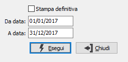

Stampa libro giornale
Il programma effettua la stampa, di prova o definitiva, del giornale di contabilità. La stampa di prova può essere effettuata più volte.
Richiamato il programma, appare la seguente maschera video:

STAMPA DEFINITIVA: check box per definire il tipo di stampa che si vuole effettuare. Valori possibili:
-
DA DATA: inserire la data da cui deve iniziare la stampa del giornale. Viene proposta la data di inizio dell'esercizio corrente nel caso non sia mai stata effettuata la stampa del giornale in definitivo, oppure il giorno successivo alla data di ultima stampa giornale nel caso sia stata effettuata almeno una stampa giornale in definitivo. Si consiglia vivamente di non modificare tale data onde evitare possibili omissioni di stampa del giornale.
A DATA: inserire la data con cui deve terminare la stampa del giornale. Viene controllato che la stampa non venga effettuata per periodi comprendenti esercizi diversi.
La pressione del bottone Esegui determina l’esecuzione della stampa.
 In caso di stampa definitiva, al termine della stampa viene visualizzato il messaggio illustrato a lato. Ciò per ovviare all’eventuale, anche se infrequente, evento di rottura di pagine o di mancato avanzamento della carta, soprattutto in caso di stampa tramite stampanti ad aghi.
In caso di stampa definitiva, al termine della stampa viene visualizzato il messaggio illustrato a lato. Ciò per ovviare all’eventuale, anche se infrequente, evento di rottura di pagine o di mancato avanzamento della carta, soprattutto in caso di stampa tramite stampanti ad aghi.
Se la stampa si è conclusa positivamente, è comunque ovviamente necessario confermare premendo il bottone OK.
Durante la stampa definitiva del giornale di contabilità viene assegnato, stampato e memorizzato il numero definitivo di articolo contabile previo riordino delle scritture contabili per data.
Nel caso in cui venisse eseguita per errore una stampa definitiva, tramite i programmi di servizio è possibile ripristinare la situazione preesistente. In tale evenienza, contattare il Servizio di Assistenza Software.